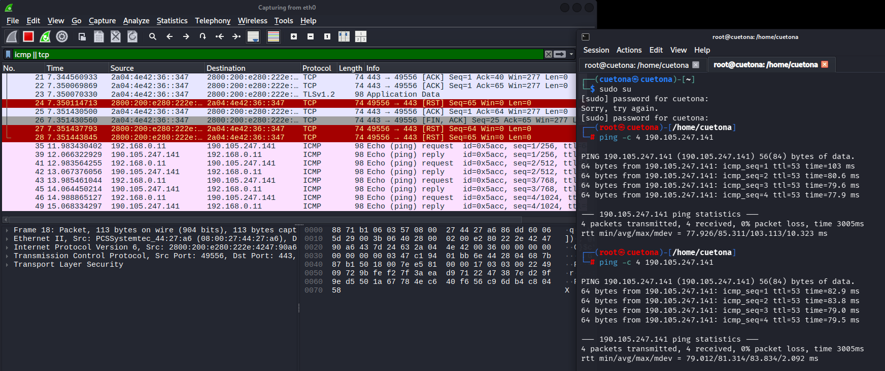
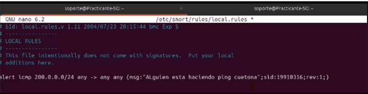
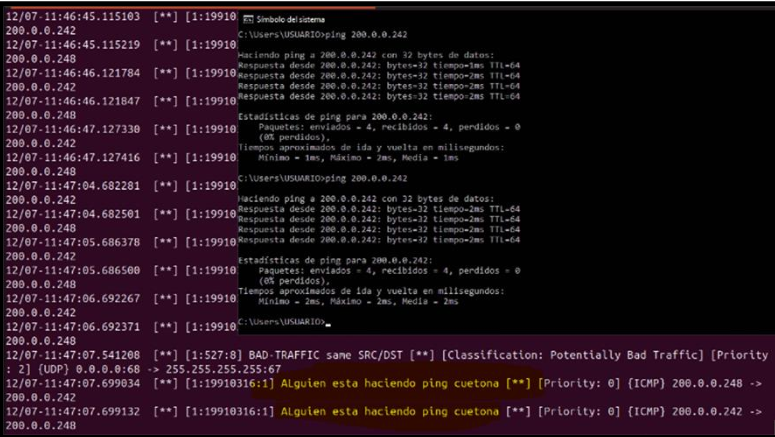

Auditoría Integral Purple Team: Gestión de Vulnerabilidades e Ingeniería de Detección
Este laboratorio práctico ha sido diseñado bajo una metodología híbrida de seguridad (Purple Team) para evaluar de forma exhaustiva la superficie de ataque y la resiliencia del dominio gubernamental/académico alumnos.uni.edu.pe (IP: 190.105.247.141). La auditoría abarca de manera secuencial desde la recolección de inteligencia pasiva basada en fuentes abiertas (OSINT) hasta el análisis activo de vulnerabilidades, permitiendo correlacionar vectores de exposición tecnológica reales con controles de monitoreo en Centros de Operaciones de Seguridad (SOC).
El núcleo ofensivo del proyecto consistió en automatizar la identificación de fallos de configuración y software desactualizado mediante el motor empresarial Greenbone OpenVAS, utilizando un perfil de escaneo optimizado (Full and Fast) adaptado a las capacidades físicas del entorno virtual. Paralelamente, la fase defensiva complementa el ciclo validando la integridad del tráfico criptográfico con Wireshark y desplegando un Sistema de Detección de Intrusos (IDS) con Snort, demostrando una visibilidad de 360 grados sobre cómo las actividades de reconocimiento dejan firmas detectables en los firewalls y perímetros de red corporativos.
Cuadro de Mando del Proyecto (Cybersecurity Framework)
| Fase de la Auditoría | Herramienta Principal | Tipo de Enfoque | Resultado / Entregable |
|---|---|---|---|
| 1. Reconocimiento Pasivo | Shodan (OSINT) | Pasivo (No intrusivo) | Mapeo de banners y exposición superficial. |
| 2. Escaneo de Puertos y Servicios | Nmap | Activo (Intrusivo) | Confirmación de puerto 443/TCP abierto (Apache). |
| 3. Gestión de Vulnerabilidades | Greenbone OpenVAS | Activo (Intrusivo) | Detección de 2 fallos de severidad Baja (2.6 Low). |
| 4. Análisis de Protocolos | Wireshark | Inspección de Paquetes | Captura y análisis del Handshake SSL/TLS (.pcapng). |
| 5. Ingeniería de Detección | Snort (IDS) | Defensivo (Blue Team) | Creación de reglas de alerta ante escaneos ruidosos. |
Fase 1: OSINT con Shodan
Inteligencia pasiva basada en exposición pública de servicios sin interacción directa con la red objetivo.
🧠 Superficie de Ataque (Reconocimiento Pasivo)
Se realizó una consulta en Shodan sobre el host
alumnos.uni.edu.pe, obteniendo información indexada sin generar tráfico directo hacia el objetivo.
📡 Metadatos Detectados
- IP:
190.105.247.141 - HTTP:
301 Moved Permanently - Servidor:
Apache - ISP:
Fravatel EIRL - Ubicación: Lima, Perú 🇵🇪
- Content-Type:
text/html; charset=iso-8859-1

💻 Fase 2: Escaneo Activo de Puertos y Servicios con Nmap
Interacción directa con el host objetivo para mapear el perímetro, validar servicios y detectar versiones en tiempo real.
🧠 Metodología de Enumeración Progresiva
Tras el análisis pasivo con Shodan, se ejecutó un escaneo activo en dos fases técnicas para identificar superficie de ataque.
⚡ Etapa 2.1: Descubrimiento de Puertos Abiertos
$ nmap -sV -F 190.105.247.141
 📡 Evidencia 2.1: Barrido rápido (-F)
📡 Evidencia 2.1: Barrido rápido (-F)
Resultado: Puertos 80/tcp y 443/tcp abiertos con servicio
Apache httpd.
🔍 Etapa 2.2: Inspección de Servicio HTTPS
$ nmap -sV -p 443 190.105.247.141
 📡 Evidencia 2.2: Análisis dirigido puerto 443
📡 Evidencia 2.2: Análisis dirigido puerto 443
Resultado: Confirmación de 443/tcp con servicio
ssl/http Apache httpd y latencia estable (~0.081s).
🛡 FASE 3: GESTIÓN DE VULNERABILIDADES (OPENVAS)
Auditoría basada en CVE/CVSS para análisis de impacto y exposición del sistema
📡 Activos e Infraestructura
| IP | 190.105.247.141 |
| Hostname | alumnos.uni.edu.pe |
| SO | Linux Kernel (QoD 100%) |
| HTTPS | No puertos abiertos |
| TLS | VÁLIDO |
| Vulns | 2 |
| Criticidad | LOW |
🚨 Vulnerabilidades Detectadas
TCP Timestamp Disclosure
CVSS 2.6Exposición de timestamps TCP que permite fingerprinting del sistema.
ICMP Timestamp Reply
CVSS 2.1El sistema responde ICMP Timestamp Request exponiendo información temporal.
🔎 Reconocimiento y Enumeración
- HTTPS 443 detectado (Apache httpd)
- Certificado SSL/TLS válido
- ALPN / NPN activos
- Apache HTTP Server identificado
- Linux Kernel fingerprint (QoD 100%)
-
Dominios:
alumnos.uni.edu.pe
docentes.uni.edu.pe
dirce.uni.edu.pe
Evidencia 3.1: Cuadro de Mando

Evidencia 3.2: Firmas y OID

🔌 FASE 4: ANÁLISIS DE TRÁFICO Y PROTOCOLOS (WIRESHARK)
Inspección profunda de paquetes en caliente (.pcapng) para auditar el comportamiento del escáner y la eficiencia criptográfica
📊 Parámetros de Captura
| Interfaz Monitorizada | eth0 |
| Formato de Archivo | .pcapng |
| Filtro Aplicado | icmp || tcp |
| Protocolos Analizados | ICMP, TCP, TLSv1.3 |
| IP Objetivo | 190.105.247.141 |
| Hostname Relacionado | docentes.uni.edu.pe |
| Estado del Enlace | CAPTURA EXITOSA |
🔍 Inspección forense en el Flujo
Validación de Mensajes ICMP (Ping Sonda)
Se interceptaron ráfagas secuenciales de peticiones Echo (ping) request y respuestas Echo (ping) reply entre la IP local 192.168.0.11 y el servidor de la universidad, verificando la latencia de diagnóstico.
Auditoría de Seguridad TLSv1.3
El análisis determinó flujos activos de transferencia bajo el protocolo criptográfico seguro TLSv1.3 en el puerto 443/TCP, confirmando negociaciones de cifrado fuertes y descarte de suites obsoletas.
🕵️♂️ Hallazgos de Red Detectados
- Correlación IP origen/destino (192.168.0.11 -> 190.105.247.141).
- Captura de diálogos de control ICMP en milisegundos reales.
- Interceptación de tráficos de aplicación web cifrados mediante TLSv1.3.
- Estructura de cabeceras Ethernet II e IPv4 analizadas sin fragmentación.
📸 Evidencia 4.1: Interceptación de Paquetes en Vivo

🚨 FASE 5: INGENIERÍA DE DETECCIÓN PERIMETRAL (SNORT IDS)
Despliegue de un Sistema de Detección de Intrusos (NIDS) operado de forma remota vía AnyDesk
📡 Monitoreo del Entorno SOC (Red Universitaria)
| Servidor Objetivo | 200.0.0.242 |
| Host de Origen (Segmento) | 200.0.0.248 |
| IP Local Casa (Origen Real) | 192.168.0.11 |
| Archivo de Reglas | /etc/snort/rules/local.rules |
| Estado del Servicio | ACTIVE // LISTENING |
🛠 Firma Personalizada en Producción
Regla Ejecutada en local.rules
alert icmp any any -> any any (msg:"Alguien esta haciendo ping cuetona"; sid:19910316; rev:1;)
Mensaje del IDS gatillado: Alguien esta haciendo ping cuetona
Evidencia Forense: Snort procesó correctamente las cabeceras del paquete ICMP enviado por AnyDesk y disparó las alertas consecutivas en tiempo real dentro de la consola morada.
📸 Evidencia 5.1: Consola de Alertas del SOC

📸 Evidencia 5.2: Trazas de Sonda e Alertas Unificadas
